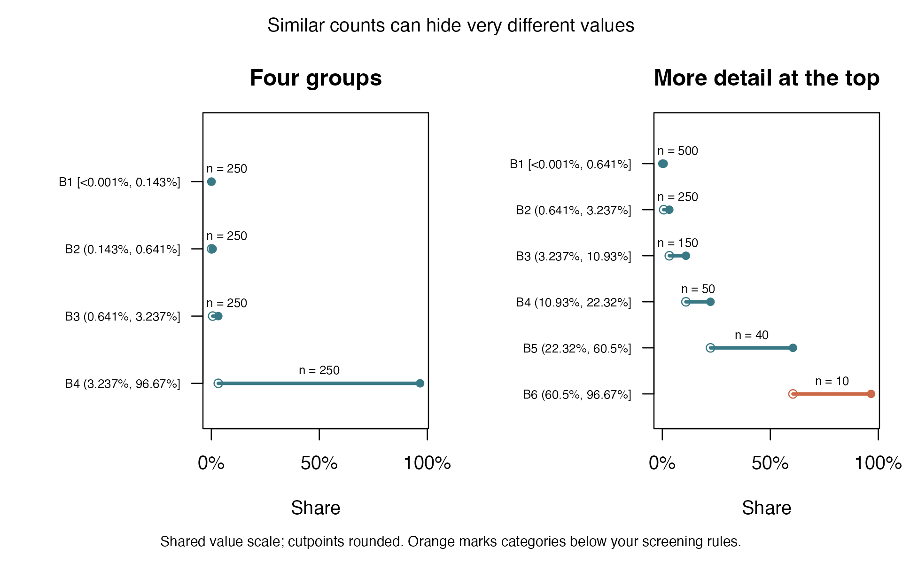
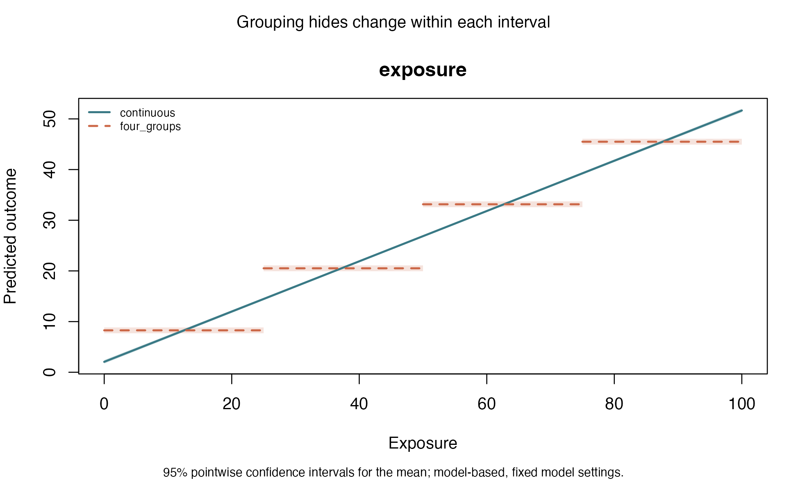
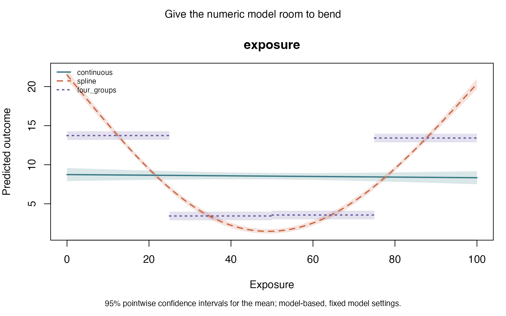
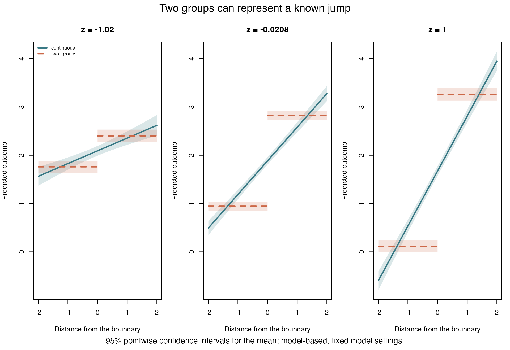
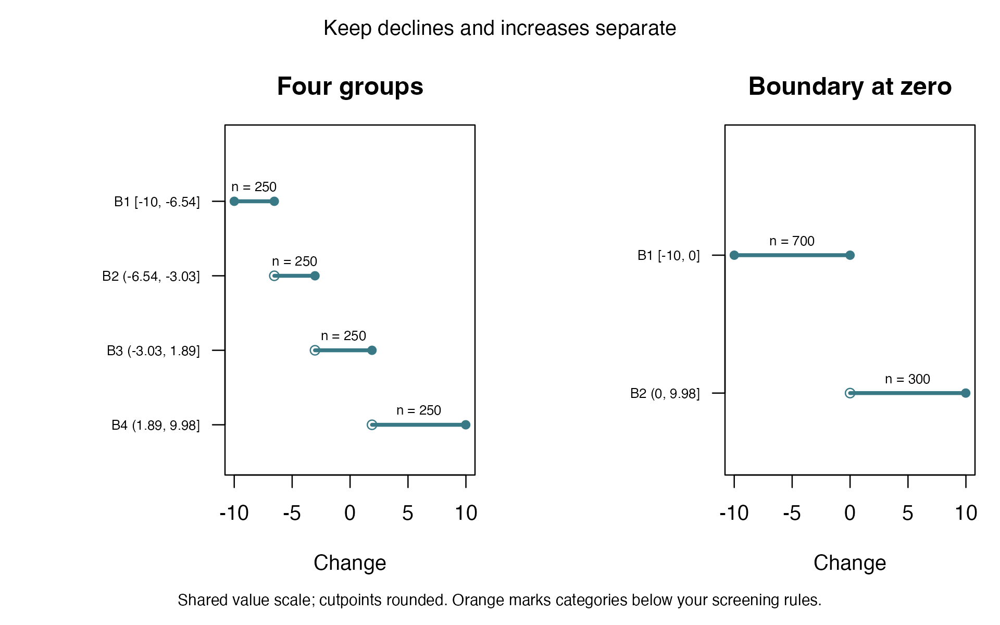

There is no single answer to whether a variable should be binned. These examples show why. Each uses data included with binwise, so you can run it without finding or preparing another dataset.
Read the explanation before the code, then compare your output with the plot. The conclusions apply to these examples. They are questions to bring to your own data, rather than rules that automatically choose bins for you.
Download the R code for these examples.
Zero can describe a different situation
In this fictional participation measure, zero means no participation. Positive values describe how much someone participates. A separate zero category preserves that distinction.
data("binwise_zero", package = "binwise")
zero_groups <- bin_diagnose(
binwise_zero, "score", bins = 3, separate_zero = TRUE, warn = FALSE
)
zero_groups$bins[, c("bin", "lower", "upper", "n")]
#> bin lower upper n
#> 1 Zero 0.000000 0.0000 400
#> 2 B1 0.004407 0.1967 200
#> 3 B2 0.196675 0.3431 200
#> 4 B3 0.343090 0.8349 200What to take from this. Zero has meaning here because of how the variable is defined. A large pile of zeros in another dataset may have a different explanation. Even here, the positive scores do not automatically need bins. Work through this example step by step.
Equal counts can hide a wide range
This simulated trade-like share contains many small values and a few much larger ones. Four groups with similar counts put a wide range of values in the last group. Adding boundaries among the largest observations makes that range easier to inspect.
data("binwise_tail", package = "binwise")
tail_choices <- bin_compare(
binwise_tail, "share", methods = "quantile",
custom_breaks = list(more_detail = as.numeric(quantile(
binwise_tail$share, c(0, .5, .75, .9, .95, .99, 1)
)))
)
plot(
tail_choices, type = "boundaries", show_counts = TRUE,
value_format = "percent", xlab = "Share",
main = "Similar counts can hide very different values",
scheme_labels = c(quantile_4 = "Four groups", more_detail = "More detail at the top")
)
What to take from this. Look at ranges and counts together. Adding groups can reveal differences among large values, but it also leaves fewer observations in each group. A long tail is a reason to inspect your choices, not a reason that the variable must be binned.
Groups can hide a steady change
In this example, the outcome rises steadily with exposure. We know that because we wrote the rule used to simulate the data. Four categories turn that steady increase into four flat steps.
data("binwise_smooth", package = "binwise")
four_groups <- bin_diagnose(binwise_smooth, "exposure", bins = 4)
smooth_fit <- bin_interact(
binwise_smooth, outcome = "outcome", variables = "exposure",
schemes = list(four_groups = four_groups)
)
plot(smooth_fit, xlab = "Exposure", main = "Grouping hides change within each interval")
The continuous line uses the original numbers.
four_groups uses the categories. The shaded areas are 95%
confidence intervals for the estimated mean outcome, not ranges
containing 95% of individual outcomes.
What to take from this. If the amount of exposure matters, these groups throw away useful differences. The fact that a flat step crosses the line near the middle of a group is not evidence that binning is appropriate.
A curve is also worth comparing
A straight line can miss a relationship that bends. In this version of the example, outcomes are higher at both ends of the exposure range. We keep the same simulated noise and change the rule for the mean outcome.
curved <- binwise_smooth
noise <- curved$outcome - curved$expected_outcome
curved$outcome <- 2 + .008 * (curved$exposure - 50)^2 + noise
curve_groups <- bin_diagnose(curved, "exposure", bins = 4)
curve_fit <- bin_interact(
curved, outcome = "outcome", variables = "exposure",
schemes = list(four_groups = curve_groups), spline_df = 3
)
plot(curve_fit, xlab = "Exposure", main = "Give the numeric model room to bend")
The spline model fits a smooth curve while keeping
exposure as numbers. spline_df = 3 sets how much
flexibility that curve has. It is a choice to check, rather than a
setting that is best for every dataset.
What to take from this. Categories can improve on a straight line simply because the line has the wrong shape. Compare the groups with a curve too. The curve comparison guide also checks predictions for observations left out of fitting.
A known jump can make groups useful
Here the simulated mean outcome jumps at zero. Within each side,
further changes in x do not change that mean when the other
predictors are fixed. This gives us a reason to try two groups before
looking at prediction scores.
The example also includes z. The size of the jump
changes with z, which is what an interaction represents.
Another variable, control, is included in each model so the
comparison uses the same additional information.
data("binwise_interaction", package = "binwise")
jump_groups <- bin_diagnose(
binwise_interaction, "x", method = "custom",
breaks = c(min(binwise_interaction$x), 0, max(binwise_interaction$x))
)
jump_fit <- bin_interact(
binwise_interaction, outcome = "threshold_outcome",
variables = c("x", "z"), controls = "control",
schemes = list(two_groups = jump_groups)
)
plot(jump_fit, xlab = "Distance from the boundary",
main = "Two groups can represent a known jump")
Each panel holds z at a different value. The
straight-line model spreads change across x. The grouped
model can represent the jump.
Now compare predictions on observations left out of model fitting. The code divides the data into five parts, fits each model using four parts, and predicts the part left out. It repeats this until every observation has a prediction from a model that was fitted without it.
jump_check <- bin_validate(
binwise_interaction, outcome = "threshold_outcome",
variables = c("x", "z"), controls = "control",
schemes = list(two_groups = list(x = list(breaks = c(-Inf, 0, Inf)))),
spline_df = 3, reference = "spline", folds = 5, seed = 12, reps = 199
)
jump_check$scores
#> model metric score lower upper
#> 1 spline RMSE 1.2763 1.2213 1.3261
#> 2 continuous RMSE 1.3430 1.2909 1.3981
#> 3 two_groups RMSE 1.1981 1.1462 1.2442
#> 4 spline MAE 1.0215 0.9763 1.0629
#> 5 continuous MAE 1.0669 1.0217 1.1150
#> 6 two_groups MAE 0.9537 0.9085 0.9936Look at RMSE, a summary of prediction error in the outcome’s units. Lower is better. In this example it is about 1.34 for the straight-line interaction, 1.28 for the curve model, and 1.20 for the two groups.
What to take from this. These bins have a known boundary, represent the simulated relationship, and predict better than both alternatives in this comparison. That is stronger evidence than looking at where fitted lines cross. In real research, a jump has to be justified by the setting and the evidence; this simulation does not establish a threshold in anyone else’s data.
A boundary can matter even when nobody equals zero
Here, negative changes are declines and positive changes are increases. There are no exact zeros. If direction is the question, two groups can be useful even though their counts differ.
data("binwise_mixed", package = "binwise")
direction_choices <- bin_compare(
binwise_mixed, "change", methods = "quantile",
custom_breaks = list(direction = c(min(binwise_mixed$change), 0,
max(binwise_mixed$change)))
)
plot(
direction_choices, type = "boundaries", show_counts = TRUE,
xlab = "Change", main = "Keep declines and increases separate",
scheme_labels = c(quantile_4 = "Four groups", direction = "Boundary at zero")
)
What to take from this. Similar group sizes are not always the goal. If direction matters, the boundary at zero preserves it. If the amount of change matters too, two groups still hide information. With the package’s interval rule, a future exact zero would join the lower group.
Bring the questions back to your data
What does each boundary mean? What differences disappear within a group? Are there enough observations to make the comparison you want? If prediction matters, do the groups help when tested on observations left out of fitting?
The working-paper example brings these questions to real trade and sanctions data. For datasets supplied with R and a guide to related packages, see real data and related work.